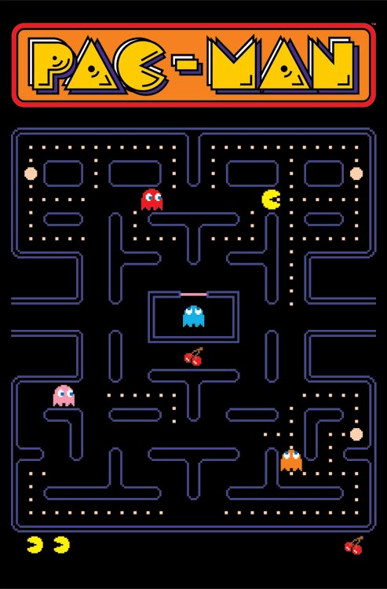
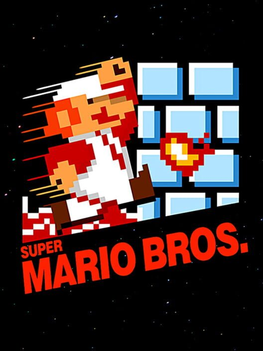
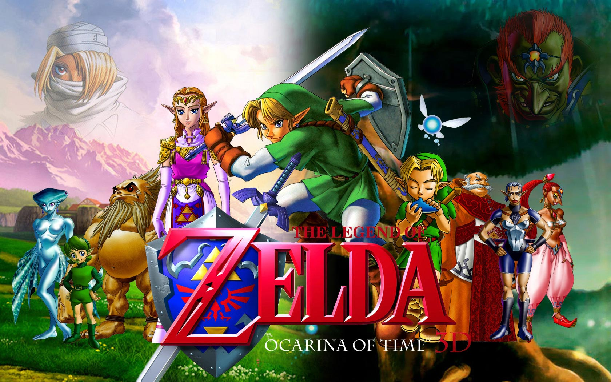
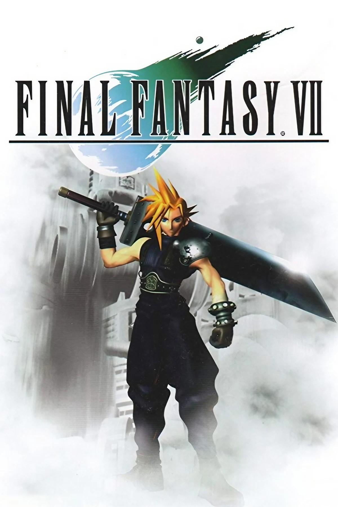

Juegos Icónicos que Marcaron Época
A lo largo de la historia del gaming, algunos juegos han dejado una huella imborrable por su innovación, jugabilidad y legado cultural. Estos títulos no solo definieron géneros, sino que también inspiraron a millones de jugadores en todo el mundo.
-
Pac-Man (1980):
Un ícono de los arcades, Pac-Man revolucionó los videojuegos con su diseño simple pero adictivo. El objetivo de comer todas las bolitas mientras se evita a los fantasmas lo convirtió en un fenómeno global.  -
Super Mario Bros (1985):
El juego que catapultó a Nintendo y redefinió los juegos de plataformas. Presentó niveles desafiantes, mundos coloridos y personajes entrañables, convirtiéndose en sinónimo de gaming clásico.  -
The Legend of Zelda: Ocarina of Time (1998):
Considerado uno de los mejores juegos de todos los tiempos, este título introdujo un mundo abierto, narrativa profunda y un sistema de juego innovador que influyó en muchos RPG y aventuras posteriores.  -
Final Fantasy VII (1997):
Este RPG de Sony PlayStation destacó por su historia épica, personajes memorables y gráficos revolucionarios para su época, popularizando el género de los juegos de rol en consolas.  -
Minecraft (2011):
Un fenómeno contemporáneo, Minecraft permitió a los jugadores crear y explorar mundos infinitos con bloques, fomentando la creatividad y la colaboración en línea.
-
Fortnite (2017):
Con su modo Battle Royale, Fortnite transformó el gaming en un fenómeno social global, integrando eventos en vivo, cultura pop y competencias profesionales.